Three directions · One fixed room · 23 October 2026
Unit 408 dining area: three Opus directions (D, E, F)
Three dining area directions for Unit 408: DIND Midnight Velvet, DINE Heritage Persian and DINF Pale Oak and Rush.
A comparison for one chosen scheme. Quantities and budgets apply to that scheme. Star (☆) any piece in the schedules to collect it under Picks.
Midnight Velvet
₱310,000–₱335,000Planning range Direction DINEHeritage Persian
₱291,000–₱315,000Planning range Direction DINFPale Oak and Rush
₱289,000–₱314,000Planning rangeThe fixed brief
What every scheme must satisfy
- 01
All prices assume new purchases. Three distinct sets of visible furniture, lighting, rugs, textiles and decor; no model or family repeats across the schemes or the parallel sets.
- 02
Every piece fits the measured room with clear walkways and door swings; plans use published dimensions and flag the rest.
- 03
Seating, tables and storage are real catalogue products with a supplier photo, price and source link.
Direction DIND
Midnight Velvet
a smoked dark oak table on slab legs with five navy velvet chairs with woven backs in the window and east-wall corner, a cream rug drawn in fine brown diamonds, an open black-and-walnut three-tier shelf in the arch-counter corner, a navy-and-sand abstract on the west wall at the table's end, a split-leaf philodendron in the window corner

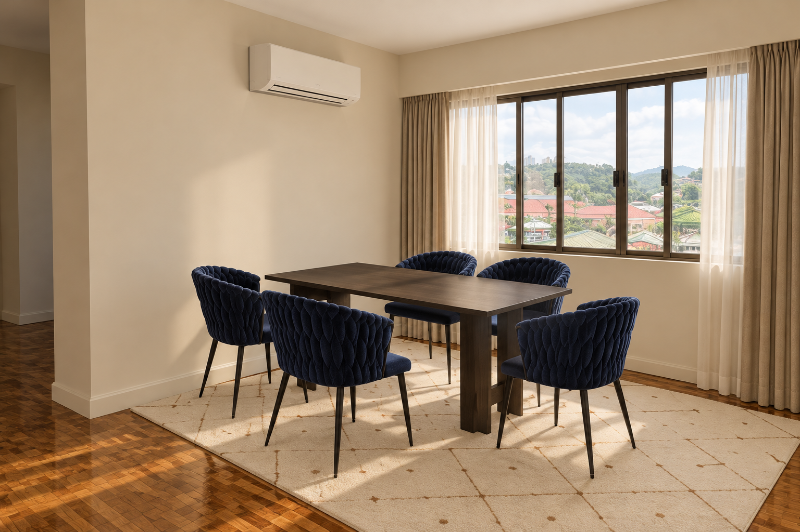

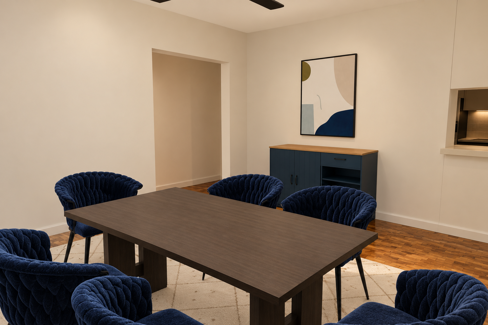

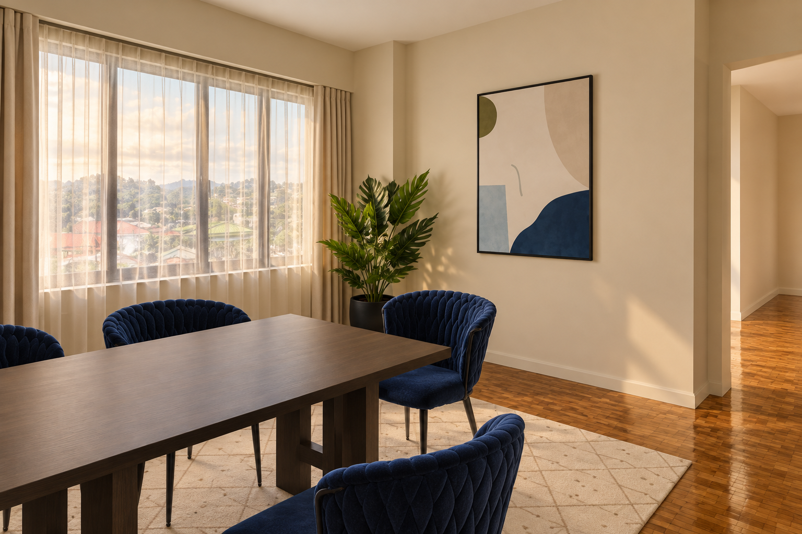

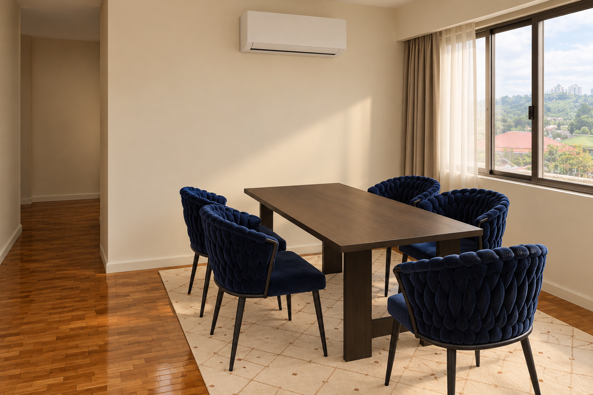
Style renders are AI images (Codex image generation, sketch-to-render) painted over the dimension-led model views below, with the original parquet photo and the supplier product photos as references: a style interpretation of each scheme, not a dimension certification; check every piece against the schedule.

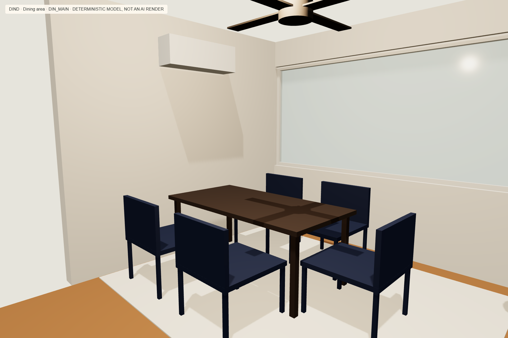

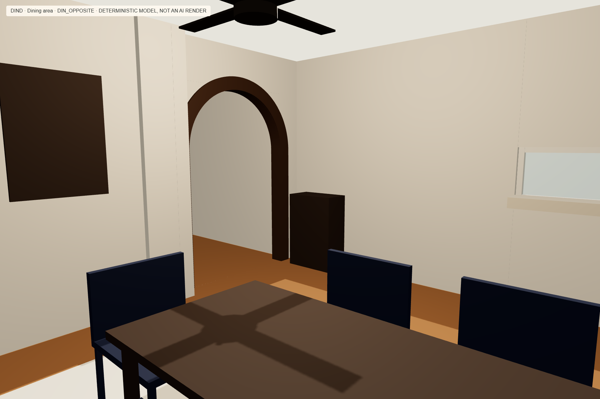

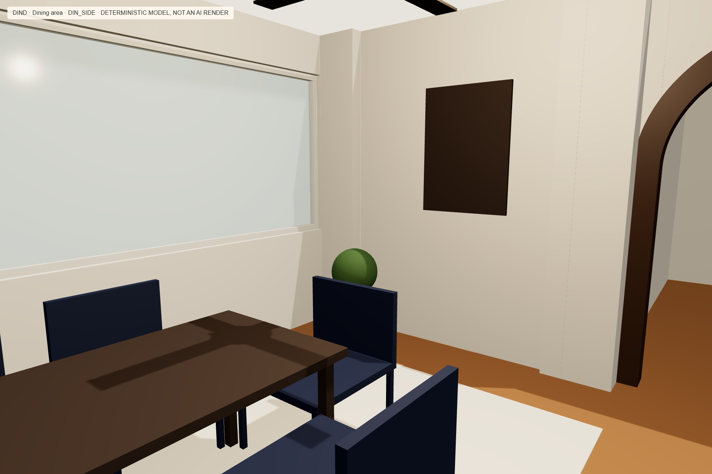

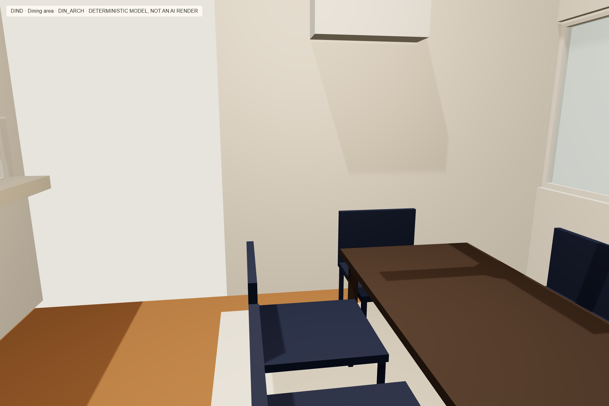
Model views are deterministic Three.js views of the audited Unit 408 shell (parquet, curtains, window, doors, closet, 75 in TV, new split AC) with the selected pieces as proxy forms at published or assumed sizes and the rug and art photos mapped to their rectangles; not AI renders, finishes approximate.
The reference board contains supplier product photographs.

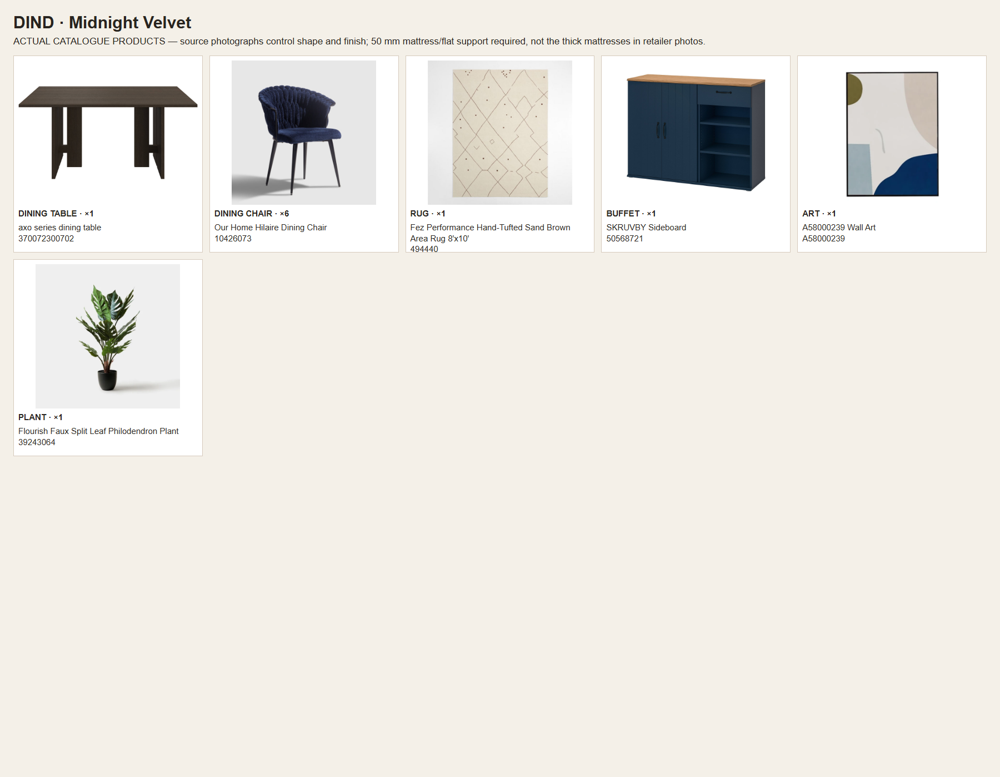

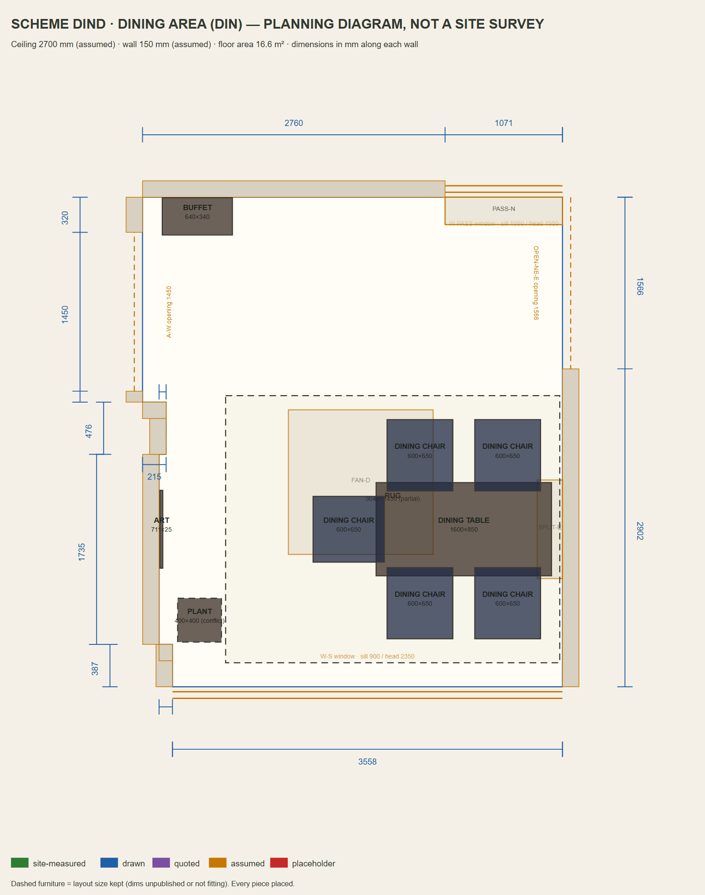
Space & fit
- Conditional fit: the layout rests on assumed values with a stated basis, none site-measured: ceiling 2700, window sills 900 and heads 2350, the arch about 1400 wide with its head at 2200 and 370 from the north corner, the pass-through counter 1050 high with a 250 projection and its head at 1550, the passage to the master bedroom 1566, the middle pier face 215 off the arch wall. Drawn: the stepped outline of the dimension contract (3831 across the arch end, 3680 across the window end, 4468 deep), the pass-through 1071, the south window 3558 in four lights; the west wall has no window (Ivan, 23 Oct). See ASSUMED.md.
- Table 1600 x 850 in the window and east-wall corner (Ivan, 23 Oct): east end 100 off the east wall under the split unit, south edge 3455; five seats as 2 on the window side + 2 on the lane side + 1 at the west end, the wall end unseated. Pulled back 200, the window-side chairs stop 58 short of the 180 curtain strip.
- Shelf 640 x 340, open with no doors, in the north-west corner between the arch and the pass-through (Ivan, 23 Oct: shelves or furniture in the opposite corner); its front stops 155 short of the 900 route band from the counter to the arch (y 500-1400), which no chair enters even pulled back: about 1.49 m stays clear between the shelf and the pulled-back lane-side chairs.
- Rug 8'x10' (2438 x 3048) laid long side to the window and pushed to the east wall (25 off): it holds every chair pulled back, stops 39 short of the curtain strip and 411 short of the route band, and runs about 650 past the west-end chair toward the plain west wall.
- No ceiling fan (the owner's dining rule: no fan in any finished design) and no pendant; the existing recessed downlights stay (not modelled). Split unit high on the east wall over the table; Davies Beige blackout + voile with valance boards on the south window. The old window unit stays hidden behind the curtains (Ivan 23 Oct), so the views leave it out.
Every scheduled itemDirection DIND · selected pieces6 rows
6 scheduled items
| Starred | Piece & exact variant | Qty / scheme | Unit price | Line price | Source & fulfillment |
|---|---|---|---|---|---|
dining tableaxo series dining tableaxo series dining table; manufacturer variant/SKU 370072300702; master 37007230; selected configuration codes: vaConfigurationSize=401; vaMaterialLeg=0702; vaMaterialTabletop=0702 Dimensions & source notesDimensions (mm): width: 1600; depth: 850; height: 745 Notes: Smoked dark oak top on slab legs, 1600 x 850 x 745 (the proposal footprint); long side parallel to the window Price basis: Per exact selected configuration; selected public product price.value, not the lower family starting-price field. Displayed selected RRP; no separate positive beforePrice published. |
1DIND | ₱121,890Source price: 2026-09-10 | ₱121,890 | Catalog listed | Cebu delivery: unconfirmed | price date 2026-09-10 | BoConceptSupplier page ↗ | |
dining chairOur Home Hilaire Dining ChairBlue Dimensions & source notesDimensions (mm): width: 600; depth: 650; height: 850 Notes: Navy velvet tub seat with a woven-strap back on slim black legs (variant Blue, as the product photo); 2 + 2 + 1, the wall end unseated Price basis: Official online listed price for the exact variant; per item. Cebu branch price and delivered total unconfirmed. |
5DIND | ₱11,655Source price: 2026-09-08 | ₱58,275 | Online listing available | Cebu delivery: unconfirmed | price date 2026-09-08 | Our HomeSupplier page ↗ | |
rugFez Performance Hand-Tufted Sand Brown Area Rug 8'x10'Fez Performance Hand-Tufted Sand Brown Area Rug 8'x10'; Sand Brown; published SKU 494440; Shopify variant 44463559508184 Dimensions & source notesDimensions (mm): width: 3048; depth: 2438 Notes: Hand-tufted cream rug with fine sand-brown diamond lines, 8'x10' laid long side to the window Price basis: Per selected Philippine listing configuration; set quantities, covers and inserts follow exact title. Published PHP price excludes unquoted delivery/crating/assembly. |
1DIND | ₱67,999Source price: 2026-09-10 | ₱67,999 | Online listing available | Cebu delivery: unconfirmed | price date 2026-09-10 | Crate & BarrelSupplier page ↗ | |
buffetStackLine Industrial 3-Tier Open Shelf BookcaseSKU bs1513-shelf-darkwalnut-mob Dimensions & source notesDimensions (mm): width: 640; depth: 340; height: 940 Notes: Open three-tier shelf, black steel frame with grey oak-look shelves, 640 x 340 x 940, in the north-west corner between the arch and the pass-through; open, no doors Price basis: Published price for the selected listing variant |
1DIND | ₱2,999Source price: 2026-09-10 | ₱2,999 | In stock according to source | Cebu delivery: unconfirmed | price date 2026-09-10 | Furniture ManilaSupplier page ↗ | |
artA58000239 Wall ArtA58000239 Wall Art; manufacturer SKU A58000239; Default Title Dimensions & source notesDimensions (mm): width: 711.2; depth: 25.4; height: 990.6 Notes: Framed abstract in navy, sand and olive, 71 x 99 portrait, on the plain west wall at the table's west end Price basis: Per exact listed official Philippine storefront variant; verify quantity/configuration in listing. Cebu branch quotation is not established. |
1DIND | ₱12,100Source price: 2026-09-10 | ₱12,100 | online_variant_available_cebu_stock_unconfirmed | Cebu delivery: unconfirmed | price date 2026-09-10 | AshleySupplier page ↗ | |
plantFlourish Faux Split Leaf Philodendron PlantDefault Title Dimensions & source notesDimensions (mm): width: 950 Notes: Faux split-leaf philodendron in a black pot in the south-west window corner Price basis: Official public online catalog price for the selected variant; per item. Cebu branch quotation and delivered total unconfirmed. |
1DIND | ₱3,419.10Source price: 2026-09-10 | ₱3,419.10 | Online listing available | Cebu delivery: unconfirmed | price date 2026-09-10 | FlourishSupplier page ↗ |


Direction DINE
Heritage Persian
a black stone oval on a reeded black X-base with five turned dark-wood cane-back side chairs in the window and east-wall corner, a soft grey hand-knotted Persian-pattern rug, a dark walnut ladder shelf in the arch-counter corner, a warm dune print on the west wall at the table's end, a leafy tree in the window corner

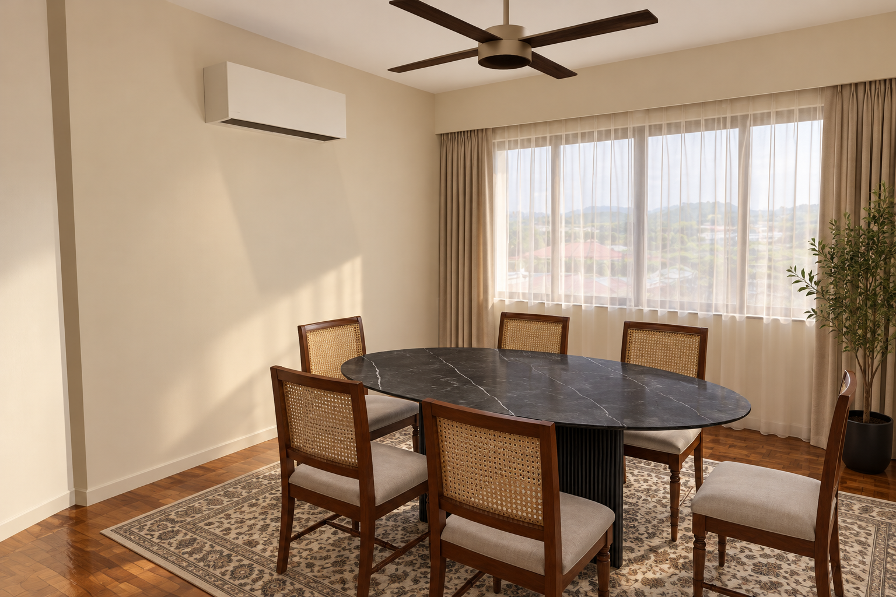

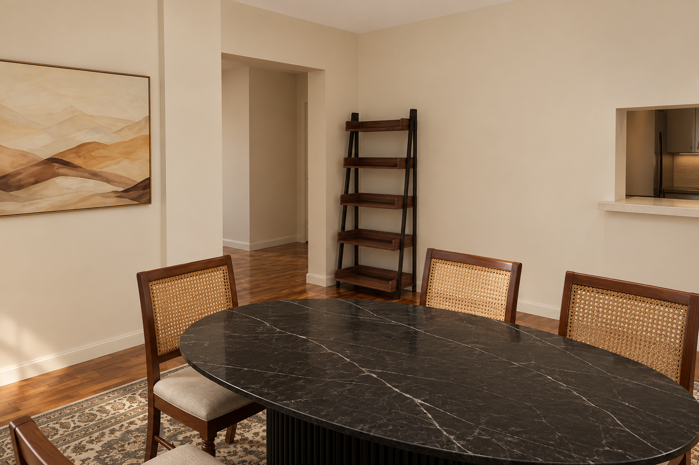

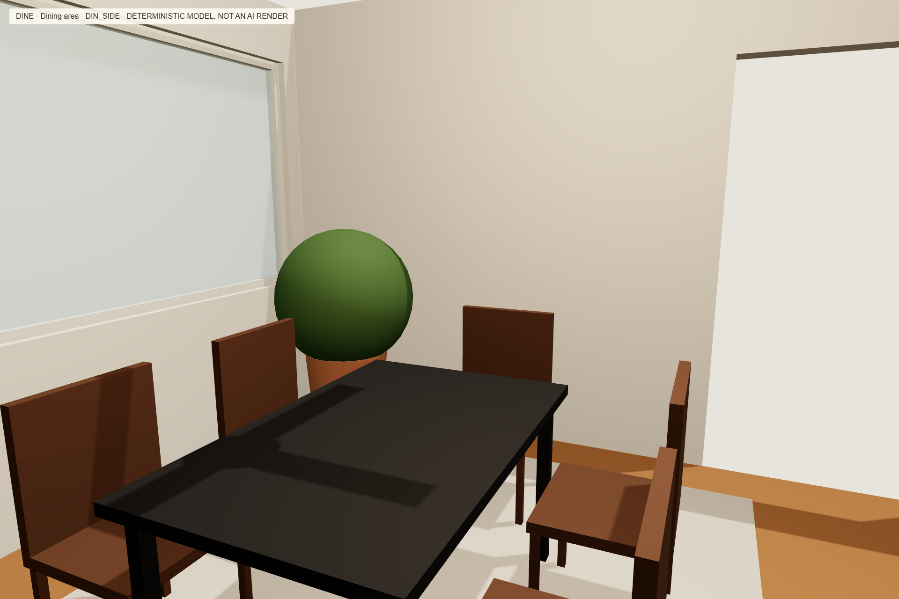

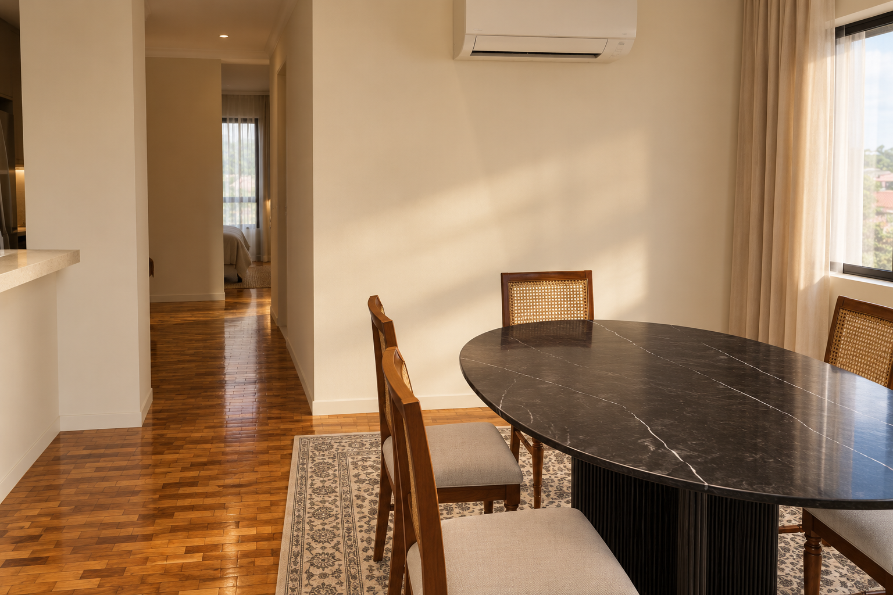
Style renders are AI images (Codex image generation, sketch-to-render) painted over the dimension-led model views below, with the original parquet photo and the supplier product photos as references: a style interpretation of each scheme, not a dimension certification; check every piece against the schedule.

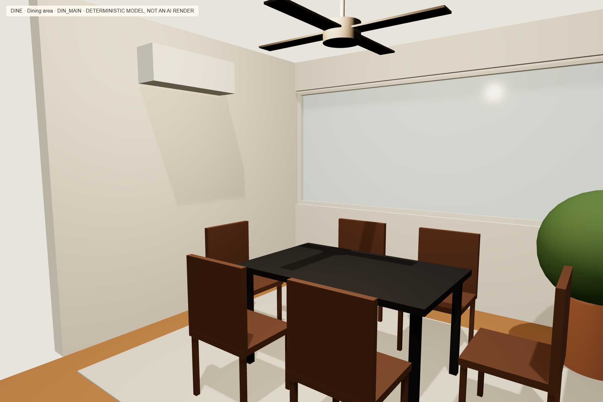

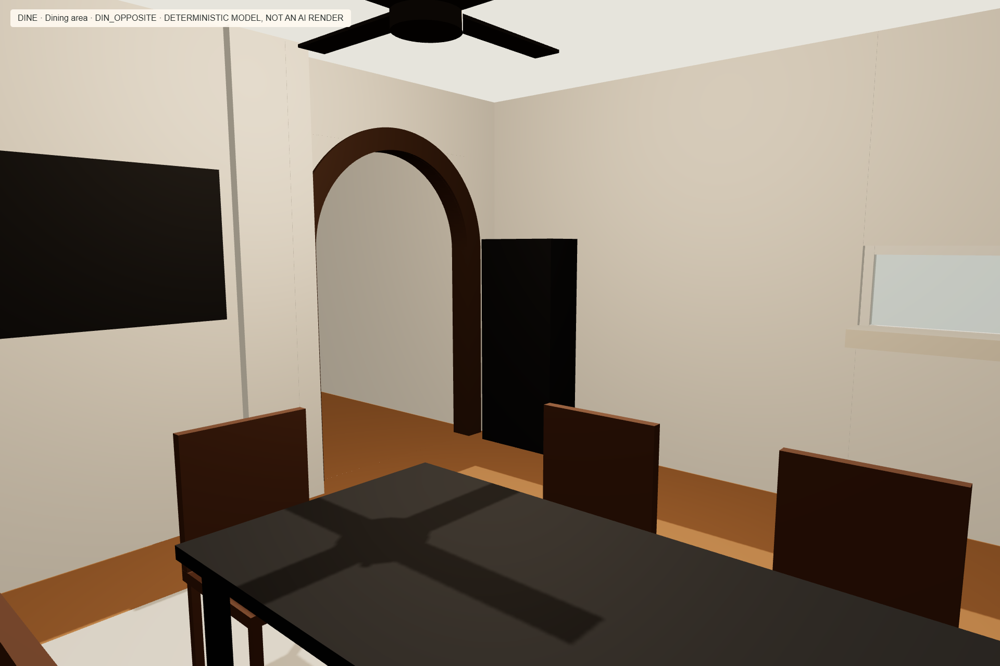

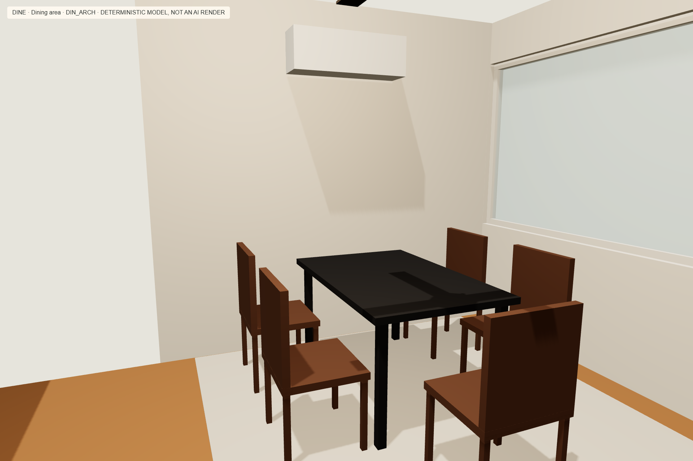
Model views are deterministic Three.js views of the audited Unit 408 shell (parquet, curtains, window, doors, closet, 75 in TV, new split AC) with the selected pieces as proxy forms at published or assumed sizes and the rug and art photos mapped to their rectangles; not AI renders, finishes approximate.
The reference board contains supplier product photographs.

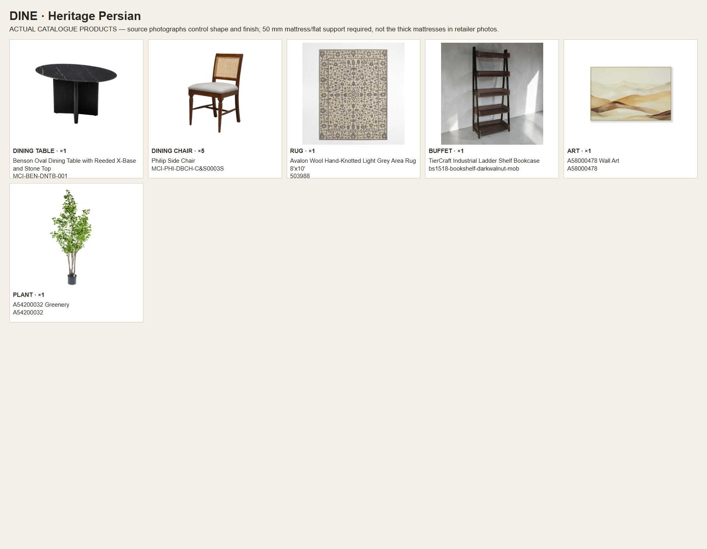

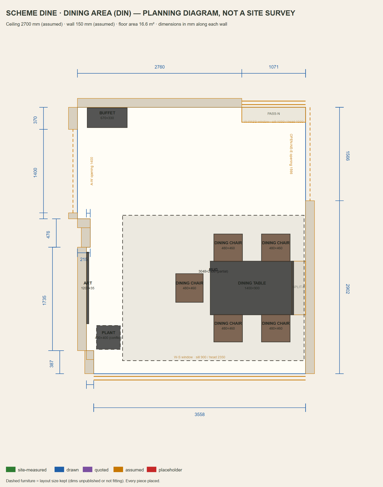
Space & fit
- Conditional fit: the layout rests on assumed values with a stated basis, none site-measured: ceiling 2700, window sills 900 and heads 2350, the arch about 1400 wide with its head at 2200 and 370 from the north corner, the pass-through counter 1050 high with a 250 projection and its head at 1550, the passage to the master bedroom 1566, the middle pier face 215 off the arch wall. Drawn: the stepped outline of the dimension contract (3831 across the arch end, 3680 across the window end, 4468 deep), the pass-through 1071, the south window 3558 in four lights; the west wall has no window (Ivan, 23 Oct). See ASSUMED.md.
- Oval 1400 x 900 in the window and east-wall corner (Ivan, 23 Oct): east end 200 off the east wall under the split unit; the pedestal base leaves the knees free; five seats as 2 on the window side + 2 on the lane side + 1 at the west end, the wall end unseated. Pulled back 200, the window-side chairs stop 108 short of the 180 curtain strip.
- Ladder shelf 670 x 330, open with no doors, in the north-west corner between the arch and the pass-through (Ivan, 23 Oct: shelves or furniture in the opposite corner); its foot stops 160 short of the 900 route band from the counter to the arch (y 500-1400), which no chair enters even pulled back: about 1.54 m stays clear between the shelf and the pulled-back lane-side chairs.
- Rug 8'x10' (2438 x 3048) laid long side to the window and pushed to the east wall (25 off): it holds every chair pulled back, stops 39 short of the curtain strip and 411 short of the route band, and runs about 650 past the west-end chair toward the plain west wall.
- No ceiling fan (the owner's dining rule: no fan in any finished design) and no pendant; the existing recessed downlights stay (not modelled). Split unit high on the east wall over the table; Davies Beige blackout + voile with valance boards on the south window. The old window unit stays hidden behind the curtains (Ivan 23 Oct), so the views leave it out.
Every scheduled itemDirection DINE · selected pieces6 rows
6 scheduled items
| Starred | Piece & exact variant | Qty / scheme | Unit price | Line price | Source & fulfillment |
|---|---|---|---|---|---|
dining tableBenson Oval Dining Table with Reeded X-Base and Stone TopBenson Oval Dining Table with Reeded X-Base and Stone Top; 6-Seater; official listing SKU MCI-BEN-DNTB-001 Dimensions & source notesDimensions (mm): width: 1400; depth: 900; height: 760 Notes: Black stone oval top on a reeded black X-base, 6-seater 140 x 90 x 76 (published on the listing); long axis parallel to the window Price basis: Per selected exact variant 6-Seater; published PHP variant price, not a from-price. Table only; chairs or styling accessories not assumed included. |
1DINE | ₱74,500Source price: 2026-09-09 | ₱74,500 | In stock according to source | Cebu delivery: unconfirmed | price date 2026-09-09 | MejoreSupplier page ↗ | |
dining chairPhilip Side ChairPhilip Side Chair; official listing SKU MCI-PHI-DBCH-C&S0003S Dimensions & source notesDimensions (mm): width: 480; depth: 460; height: 930 Notes: Dark turned-wood side chair with a cane back and a pale grey seat, 48 x 46 x 93 (published on the listing); 2 + 2 + 1, the wall end unseated Price basis: Per selected exact variant Default Title; published PHP variant price, not a from-price. |
5DINE | ₱15,225Source price: 2026-09-09 | ₱76,125 | In stock according to source | Cebu delivery: unconfirmed | price date 2026-09-09 | MejoreSupplier page ↗ | |
rugAvalon Wool Hand-Knotted Light Grey Area Rug 8'x10'Avalon Wool Hand-Knotted Light Grey Area Rug 8'x10'; Light Grey; published SKU 503988; Shopify variant 44463560851672 Dimensions & source notesDimensions (mm): width: 3048; depth: 2438 Notes: Hand-knotted wool rug in a traditional Persian pattern, soft grey and taupe on cream with a border (Light Grey, as the product photo), 8'x10' laid long side to the window. Replaces the IKEA ONSEVIG, which an earlier bedroom scheme already used Price basis: Per selected Philippine listing configuration; set quantities, covers and inserts follow exact title. Published PHP price excludes unquoted delivery/crating/assembly. |
1DINE | ₱64,999Source price: 2026-09-10 | ₱64,999 | Online listing available | Cebu delivery: unconfirmed | price date 2026-09-10 | Crate & BarrelSupplier page ↗ | |
buffetTierCraft Industrial Ladder Shelf BookcaseSKU bs1518-bookshelf-darkwalnut-mob Dimensions & source notesDimensions (mm): width: 670; depth: 330; height: 1600 Notes: Five-tier leaning ladder shelf, dark walnut-look shelves on a black steel A-frame, 670 x 330 x 1600, in the north-west corner between the arch and the pass-through; open, no doors Price basis: Published price for the selected listing variant |
1DINE | ₱4,650Source price: 2026-09-10 | ₱4,650 | In stock according to source | Cebu delivery: unconfirmed | price date 2026-09-10 | Furniture ManilaSupplier page ↗ | |
artA58000478 Wall ArtA58000478 Wall Art; manufacturer SKU A58000478; Default Title; Multi Dimensions & source notesDimensions (mm): width: 1200.15; depth: 35.052; height: 800.1 Notes: Framed print of ochre and sand dunes, 120 x 80, on the plain west wall at the table's west end Price basis: Per exact listed official Philippine storefront variant; verify quantity/configuration in listing. Cebu branch quotation is not established. |
1DINE | ₱13,800Source price: 2026-09-10 | ₱13,800 | online_variant_available_cebu_stock_unconfirmed | Cebu delivery: unconfirmed | price date 2026-09-10 | AshleySupplier page ↗ | |
plantA54200032 GreeneryA54200032 Greenery; manufacturer SKU A54200032; Default Title; Green Dimensions & source notesDimensions (mm): width: 838.2; depth: 787.4; height: 1828.8 Notes: Faux leafy tree 183 high in a black pot in the south-west window corner Price basis: Per exact listed official Philippine storefront variant; verify quantity/configuration in listing. Cebu branch quotation is not established. |
1DINE | ₱15,000Source price: 2026-09-10 | ₱15,000 | online_variant_available_cebu_stock_unconfirmed | Cebu delivery: unconfirmed | price date 2026-09-10 | AshleySupplier page ↗ |


Direction DINF
Pale Oak and Rush
a pale oak veneer table with five solid oak armchairs with woven rush seats and backs in the window and east-wall corner, a light tan textured wool rug, an open natural bamboo console in the arch-counter corner, a soft green landscape on the west wall at the table's end, a manzanita spray in a cream vase in the window corner

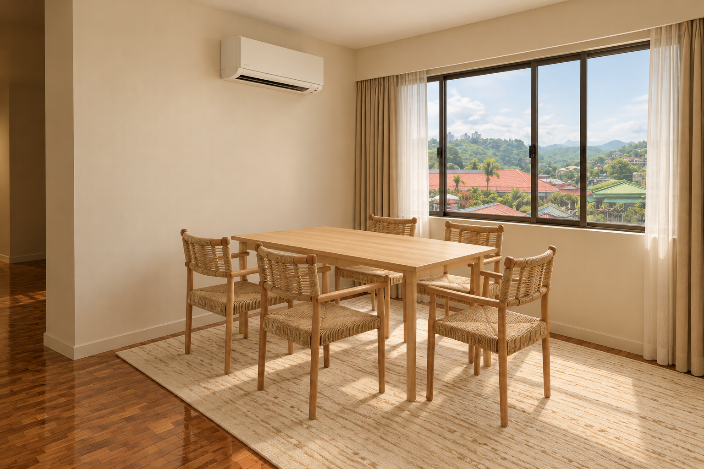

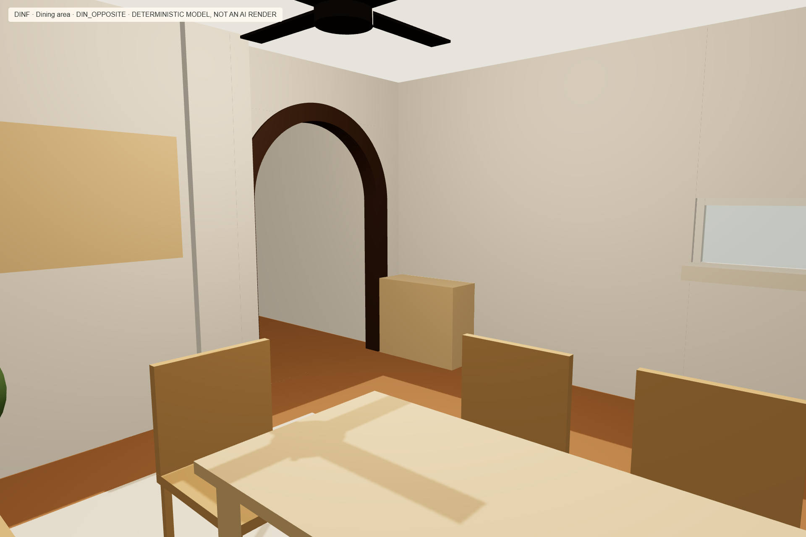

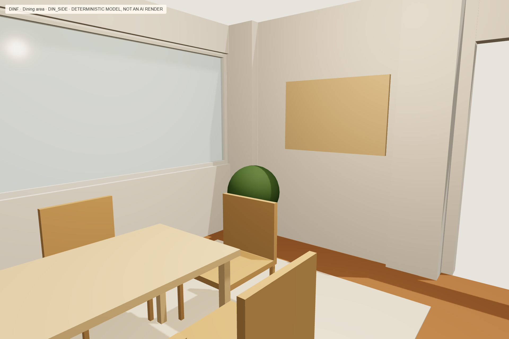

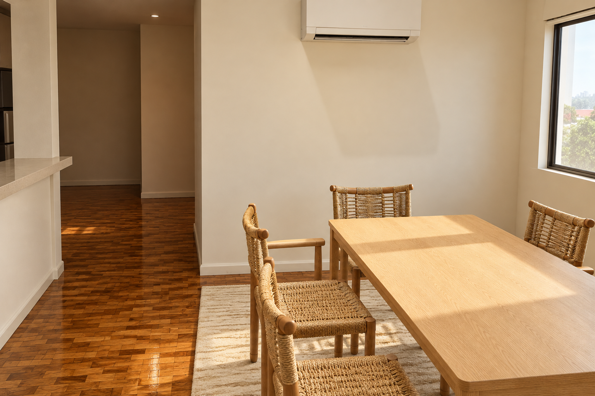
Style renders are AI images (Codex image generation, sketch-to-render) painted over the dimension-led model views below, with the original parquet photo and the supplier product photos as references: a style interpretation of each scheme, not a dimension certification; check every piece against the schedule.

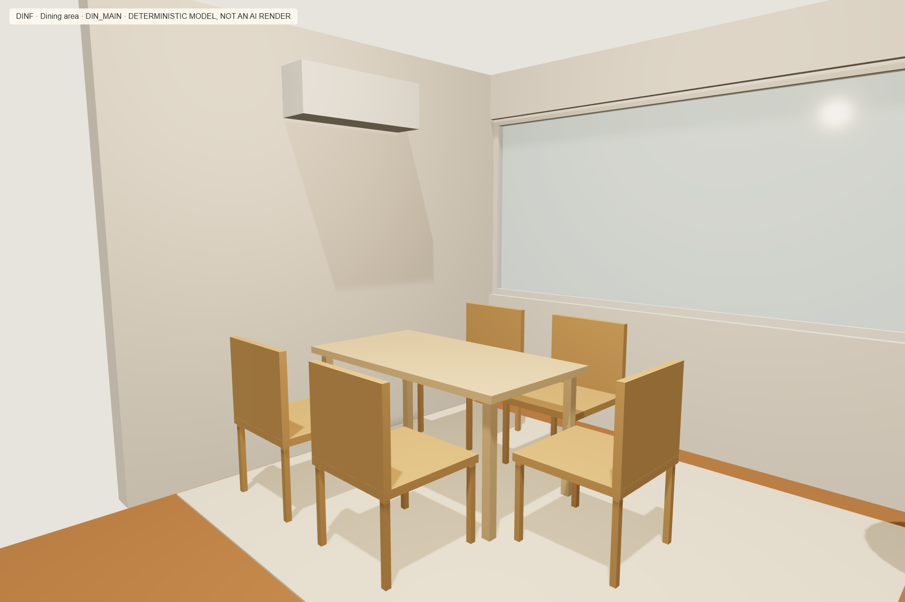

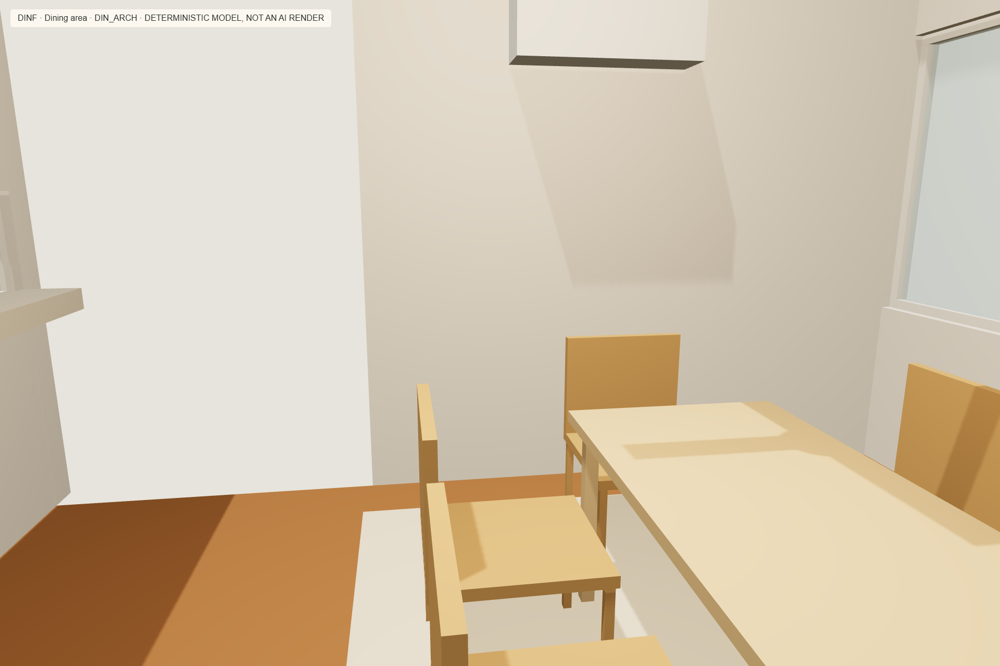
Model views are deterministic Three.js views of the audited Unit 408 shell (parquet, curtains, window, doors, closet, 75 in TV, new split AC) with the selected pieces as proxy forms at published or assumed sizes and the rug and art photos mapped to their rectangles; not AI renders, finishes approximate.
The reference board contains supplier product photographs.

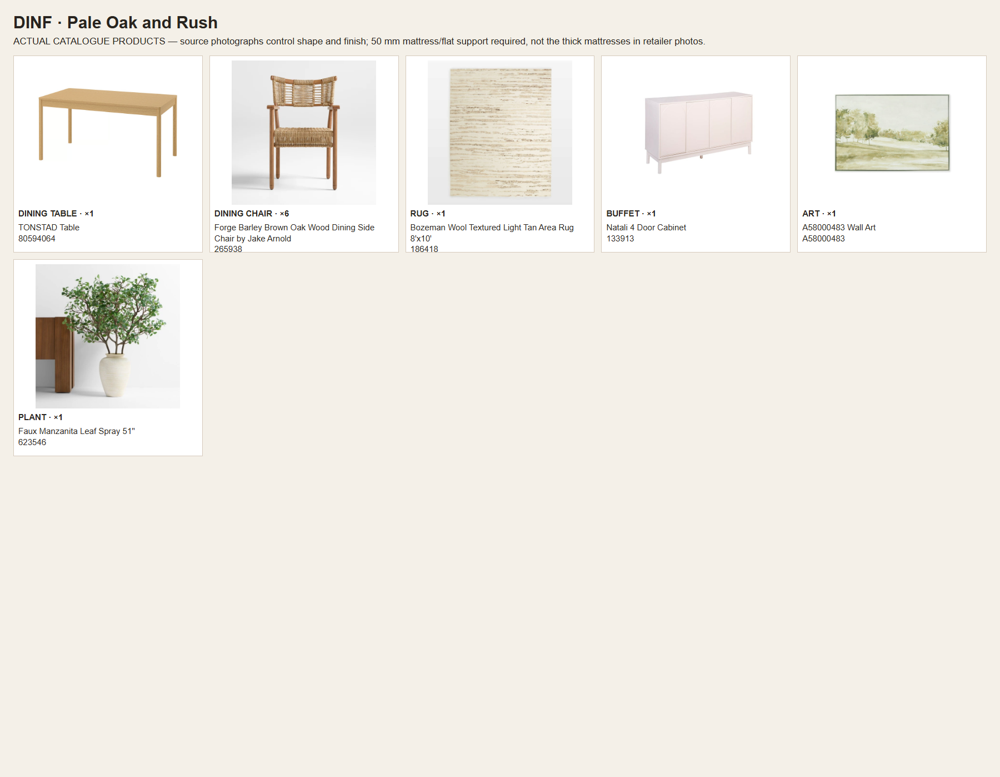

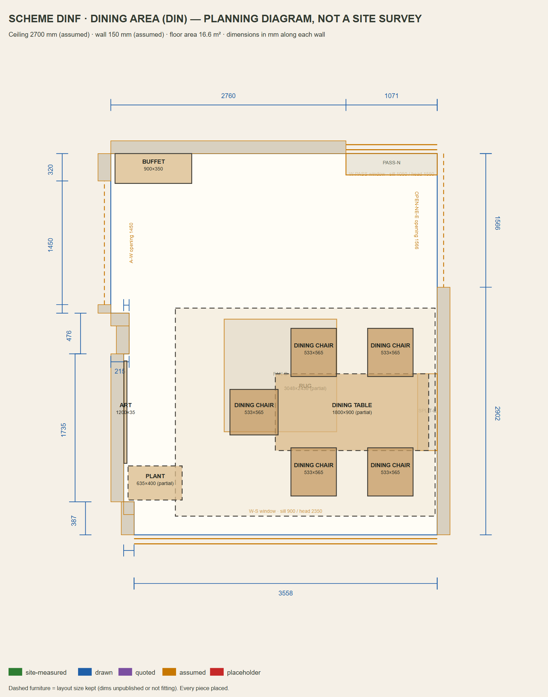
Space & fit
- Conditional fit: the layout rests on assumed values with a stated basis, none site-measured: ceiling 2700, window sills 900 and heads 2350, the arch about 1400 wide with its head at 2200 and 370 from the north corner, the pass-through counter 1050 high with a 250 projection and its head at 1550, the passage to the master bedroom 1566, the middle pier face 215 off the arch wall. Drawn: the stepped outline of the dimension contract (3831 across the arch end, 3680 across the window end, 4468 deep), the pass-through 1071, the south window 3558 in four lights; the west wall has no window (Ivan, 23 Oct). See ASSUMED.md.
- Table 1500 x 800 in the window and east-wall corner (Ivan, 23 Oct): east end 150 off the east wall under the split unit; five armchairs 533 wide as 2 on the window side + 2 on the lane side + 1 at the west end, the wall end unseated. Pulled back 200, the window-side chairs stop 100 short of the 180 curtain strip.
- Console 900 x 350, open with no doors, in the north-west corner between the arch and the pass-through (Ivan, 23 Oct: shelves or furniture in the opposite corner); its front stops 150 short of the 900 route band from the counter to the arch (y 500-1400), which no chair enters even pulled back: about 1.52 m stays clear between the console and the pulled-back lane-side chairs.
- Rug 8'x10' (2438 x 3048) laid long side to the window and pushed to the east wall (25 off): it holds every chair pulled back, stops 39 short of the curtain strip and 411 short of the route band, and runs about 650 past the west-end chair toward the plain west wall.
- No ceiling fan (the owner's dining rule: no fan in any finished design) and no pendant; the existing recessed downlights stay (not modelled). Split unit high on the east wall over the table; Davies Beige blackout + voile with valance boards on the south window. The old window unit stays hidden behind the curtains (Ivan 23 Oct), so the views leave it out.
Every scheduled itemDirection DINF · selected pieces6 rows
6 scheduled items
| Starred | Piece & exact variant | Qty / scheme | Unit price | Line price | Source & fulfillment |
|---|---|---|---|---|---|
 dining tableTONSTAD TableTable, oak veneer, 150x80 cm (59x31 1/2 ") Dimensions & source notesDimensions (mm): width: 1500; depth: 800 Notes: Oak veneer table 1500 x 800 on round legs; long side parallel to the window Price basis: Per listed item/combination for exact article number |
1DINF | ₱17,999Source price: 2026-09-08 | ₱17,999 | Available for delivery | Cebu delivery: unconfirmed | price date 2026-09-08 | IKEASupplier page ↗ | |
dining chairForge Barley Brown Oak Wood Dining Side Chair by Jake ArnoldForge Barley Brown Oak Wood Dining Side Chair by Jake Arnold; Single listed configuration; published SKU 265938; Shopify variant 43717493752024 Dimensions & source notesDimensions (mm): width: 533.4; depth: 565.15; height: 901.7 Notes: Solid oak armchair with a woven rush seat and back (Barley Brown Oak, as the product photo), 533 x 565 x 902; 2 + 2 + 1, the wall end unseated Price basis: Per selected Philippine listing configuration; set quantities, covers and inserts follow exact title. Published PHP price excludes unquoted delivery/crating/assembly. |
5DINF | ₱23,095Source price: 2026-09-10 | ₱115,475 | Online listing available | Cebu delivery: unconfirmed | price date 2026-09-10 | Crate & BarrelSupplier page ↗ | |
rugBozeman Wool Textured Light Tan Area Rug 8'x10'Bozeman Wool Textured Light Tan Area Rug 8'x10'; Single listed configuration; published SKU 186418; Shopify variant 44998418137304 Dimensions & source notesDimensions (mm): width: 3048; depth: 2438 Notes: Textured wool rug in cream and light tan streaks, 8'x10' laid long side to the window Price basis: Per selected Philippine listing configuration; set quantities, covers and inserts follow exact title. Published PHP price excludes unquoted delivery/crating/assembly. |
1DINF | ₱87,995Source price: 2026-09-10 | ₱87,995 | Online listing available | Cebu delivery: unconfirmed | price date 2026-09-10 | Crate & BarrelSupplier page ↗ | |
buffetLarson Bamboo Console TableSingle published variant; SKU 111721 Dimensions & source notesDimensions (mm): width: 900; depth: 350; height: 760 Notes: Natural bamboo console with a slatted lower shelf, 900 x 350 x 760, in the north-west corner between the arch and the pass-through; open, no doors Price basis: Official public catalog price in PHP for the selected exact variant; no member discount inferred. |
1DINF | ₱5,600Source price: 2026-09-10 | ₱5,600 | Catalog listed | Cebu delivery: unconfirmed | price date 2026-09-10 | Mandaue FoamSupplier page ↗ | |
artA58000483 Wall ArtA58000483 Wall Art; manufacturer SKU A58000483; Default Title; Multi Dimensions & source notesDimensions (mm): width: 1200.15; depth: 35.052; height: 800.1 Notes: Framed soft green landscape with trees, 120 x 80, on the plain west wall at the table's west end Price basis: Per exact listed official Philippine storefront variant; verify quantity/configuration in listing. Cebu branch quotation is not established. |
1DINF | ₱13,600Source price: 2026-09-10 | ₱13,600 | online_variant_available_cebu_stock_unconfirmed | Cebu delivery: unconfirmed | price date 2026-09-10 | AshleySupplier page ↗ | |
plantFaux Manzanita Leaf Spray 51"Faux Manzanita Leaf Spray 51"; Single listed configuration; published SKU 623546; Shopify variant 50720995737816 Dimensions & source notesDimensions (mm): width: 635; height: 1295.4 Notes: Faux manzanita leaf spray in a cream vase, about 130 high, in the south-west window corner Price basis: Per selected Philippine listing configuration; set quantities, covers and inserts follow exact title. Published PHP price excludes unquoted delivery/crating/assembly. |
1DINF | ₱6,999Source price: 2026-09-10 | ₱6,999 | Online listing available | Cebu delivery: unconfirmed | price date 2026-09-10 | Crate & BarrelSupplier page ↗ |


Your shortlist
Starred pieces
Star ☆ any piece in the schedules above and it is listed here by direction with a running total. Stars are saved in this browser only. Use Copy link to send them to someone else (the link opens with the same stars) or Copy as text for a message.
No starred pieces yet.
Plain-text list
Compare the complete plan
Budgets, with the open costs visible
Quoted work and fulfillment remain unresolved. The planning ranges include the allowances below, plus 10% contingency, rounded up to ₱1,000.
| Per chosen scheme | DINDMidnight Velvet | DINEHeritage Persian | DINFPale Oak and Rush |
|---|---|---|---|
| Selected design pieces | ₱266,682.10 | ₱249,074 | ₱247,668 |
| Common essentials & room treatments | ₱0 | ₱0 | ₱0 |
| Priced schedule subtotal | ₱266,682.10 | ₱249,074 | ₱247,668 |
| Working planning range | ₱310,000 to ₱335,000 | ₱291,000 to ₱315,000 | ₱289,000 to ₱314,000 |
Planning allowances ₱15,000–₱37,000 before contingency
| Work or provision | Low | High | Basis & limits |
|---|---|---|---|
| Cebu freight, delivery and handling | ₱5,000 | ₱15,000 | Planning allowance only; no shipping rates/address allocation obtained. Overseas freight not included. |
| TV/art/pendant installation and assembly | ₱5,000 | ₱10,000 | Planning allowance only; installer must specify anchors and verify substrate. Includes no structural rebuilding. |
| Paint touch-up and site coordination | ₱5,000 | ₱12,000 | Estimator reserve, not a contractor quote. |
Shared foundations
Common essentials & fixed room treatments
The fixed curtains and listed technical essentials are common room provisions. Scheme letters show where each row applies; quantities are per chosen scheme.
Every scheduled itemCommon room schedule0 rows
0 scheduled items
| Starred | Piece & exact variant | Qty / scheme | Unit price | Line price | Source & fulfillment |
|---|
Before ordering
Resolve these procurement gates
- Prices are catalogue references with each line's own price date. Product existence and photos are verified; exact Cebu stock, address delivery and checkout totals are not.
- Pieces flagged "dims unpublished" in the room placement report keep the layout size; measure them at the showroom before ordering.
- Delivery path for the sofa, dining table and buffet (lift, corridor, door widths) to be confirmed with the building before ordering.
- Style renders are AI interpretations painted over the dimension-led model views; supplier photo boards, measured plans and the item schedule are the acceptance basis.
Source notes
- Catalogue of record: the frozen Airtable catalogue snapshot. No Airtable writes.
- 18 visible selections, each with a supplier photo where one was captured; models and families were checked against the earlier schemes and the parallel sets' claims (uniqueness.py).
- Product photos are unaltered retailer references. Plans use published dimensions where available and flag defaults where not.
- PH retailer routes establish real-product sourcing. Cebu fulfilment requires checkout/branch confirmation; no supplier contact or order has been made.